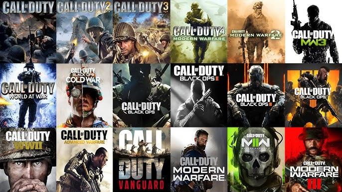
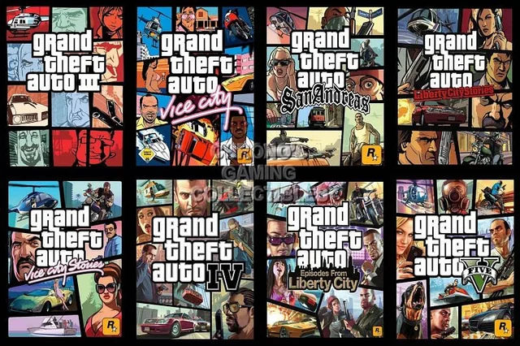
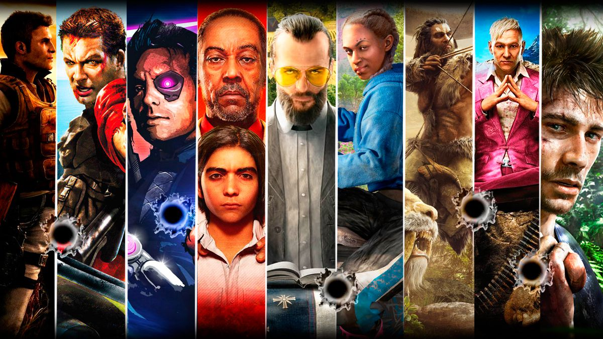
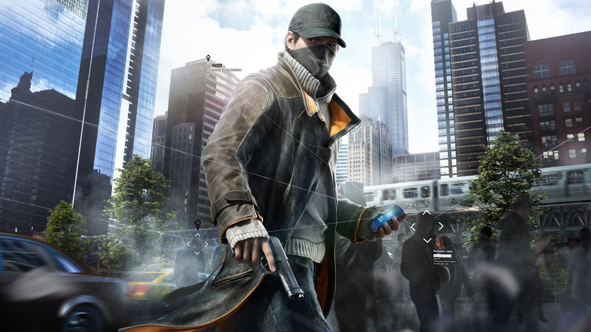
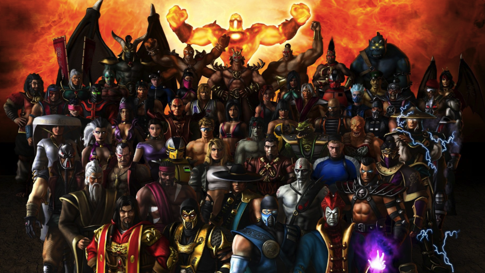
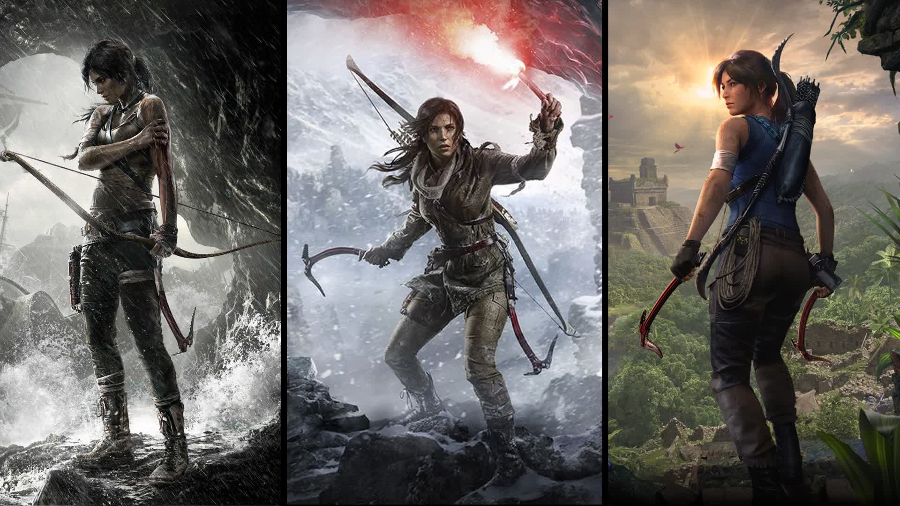
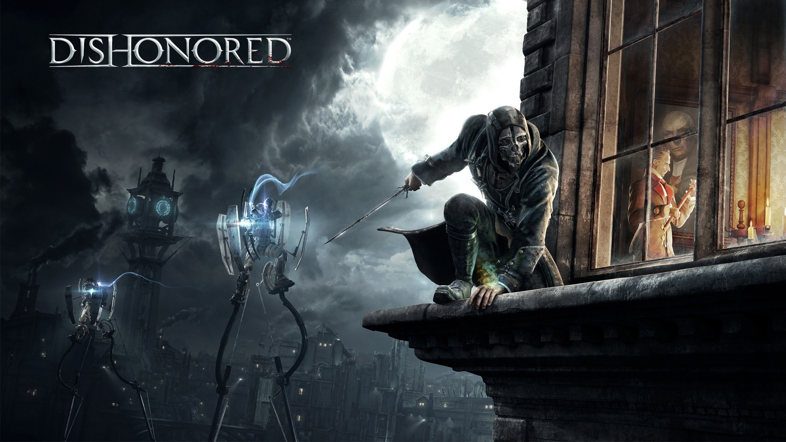

"Assassin's Creed" is a popular action-adventure video game franchise developed and published by Ubisoft. The series debuted in 2007 with the release of the first "Assassin's Creed" game and has since become one of the most successful and enduring franchises in the gaming industry.
The core gameplay of "Assassin's Creed" typically involves players taking on the role of an assassin from various historical periods, navigating open-world environments, and completing missions and objectives that often involve stealth, parkour, and combat. The franchise is known for its blend of historical fiction, science fiction, and conspiracy theories, as well as its emphasis on exploration and narrative-driven gameplay.
The "Assassin's Creed" franchise has also expanded beyond video games to include novels, comic books, animated films, and live-action adaptations. It continues to be one of Ubisoft's flagship franchises, known for its richly detailed historical settings, complex narratives, and immersive gameplay experiences.

"Call of Duty" (often abbreviated as COD) is a highly popular first-person shooter video game franchise developed by various studios and published by Activision. The series debuted in 2003 with the release of the original "Call of Duty," set during World War II, and has since expanded to cover a wide range of historical and modern military conflicts, as well as futuristic settings.
"Call of Duty" games are known for their fast-paced multiplayer modes, cinematic single-player campaigns, and cooperative gameplay options. The franchise has also featured various sub-series and spin-offs, including the "Modern Warfare" series, the "Black Ops" series, and the "Warzone" battle royale mode.
In addition to its mainline games, the "Call of Duty" franchise regularly receives expansions, downloadable content (DLC), and seasonal updates to keep its multiplayer experience fresh and engaging. The series has also inspired a number of spin-off games, including mobile versions and titles set in different genres such as strategy and online card games.
Overall, "Call of Duty" remains one of the most successful and enduring franchises in the gaming industry, known for its high production values, addictive gameplay, and large and dedicated player base.
"Need for Speed" is a popular racing video game franchise developed by Electronic Arts (EA). It debuted in 1994 with the release of the first game in the series, simply titled "The Need for Speed." Since then, the franchise has grown to become one of the best-selling racing game series in the world.
The "Need for Speed" series typically focuses on high-speed racing, featuring a variety of exotic cars, customization options, and intense gameplay. Over the years, the franchise has explored various themes and settings, ranging from illegal street racing to professional circuit racing and everything in between.
The "Need for Speed" series has also inspired a film adaptation released in 2014, starring Aaron Paul, which featured a storyline centered around illegal street racing and car culture.
With each new installment, the "Need for Speed" franchise aims to deliver thrilling racing experiences while pushing the boundaries of graphics, customization, and online multiplayer features.

"Grand Theft Auto" (GTA) is a highly popular and influential video game series developed by Rockstar Games. Known for its open-world gameplay, action-adventure elements, and satirical take on American culture, the series has become one of the best-selling and most critically acclaimed franchises in the gaming industry.
The series began in 1997 with the release of the original "Grand Theft Auto," which featured a top-down perspective and allowed players to engage in various criminal activities in a fictional city. However, the series truly gained mainstream attention with the release of "Grand Theft Auto III" in 2001, which introduced a fully three-dimensional open world and set the standard for open-world gaming.
"Grand Theft Auto" games are known for their expansive open worlds, intricate narratives, and vast array of activities and side missions. They often explore themes of crime, corruption, and the American Dream while offering players unprecedented freedom to explore and interact with the game world. Additionally, the series has faced controversy over its depiction of violence and mature themes, but it continues to be immensely popular among gamers worldwide.

"Far Cry" is a popular first-person shooter video game series developed by Ubisoft. The series is known for its immersive open-world environments, diverse gameplay mechanics, and often exotic settings. Each game typically features a different protagonist and storyline, but they share thematic elements such as survival, exploration, and combat.
The first "Far Cry" game was released in 2004 and was developed by Crytek. It was set on a tropical archipelago and focused on a former Special Forces operative named Jack Carver who becomes stranded and must fend off mercenaries and mutants.
Ubisoft took over the development of the series starting with "Far Cry 2" in 2008. This installment shifted the setting to a war-torn African country and introduced elements such as dynamic weather and a robust open-world environment.
"Far Cry 3," released in 2012, is often regarded as a high point for the series. It features a richly detailed open world set on a tropical island, and players control Jason Brody, a tourist who becomes embroiled in conflict with a group of pirates. The game received critical acclaim for its compelling story, memorable characters, and engaging gameplay.
Subsequent entries in the series include "Far Cry 4" (2014), set in the fictional Himalayan country of Kyrat, and "Far Cry 5" (2018), set in the fictional Hope County, Montana, USA. Each installment has its own unique setting, characters, and gameplay mechanics, but they all share the series' emphasis on exploration, combat, and player freedom within the open world.

"Watch Dogs" is a video game series developed and published by Ubisoft. The series debuted in 2014 with the release of the first game, simply titled "Watch Dogs," followed by "Watch Dogs 2" in 2016 and "Watch Dogs: Legion" in 2020.
Set in open-world environments, the games typically feature a blend of action-adventure, stealth, and hacking gameplay mechanics. Players assume the role of skilled hackers who use their abilities to navigate and manipulate various electronic systems within the game world. The storylines often revolve around themes of surveillance, privacy, and technology's impact on society.
In "Watch Dogs," players control Aiden Pearce, a vigilante hacker seeking revenge in a fictionalized version of Chicago. "Watch Dogs 2" shifts the setting to a fictionalized version of the San Francisco Bay Area and follows a new protagonist, Marcus Holloway, as he joins a hacking group to take down a corrupt corporation. "Watch Dogs: Legion" takes place in a near-future London and introduces a unique gameplay mechanic where players can recruit and play as multiple characters with different abilities.
The series is praised for its immersive open-world environments, hacking mechanics, and diverse gameplay options. It has also sparked discussions about the implications of technology and surveillance in modern society.

"Mortal Kombat" is a popular video game franchise known for its intense fighting gameplay and iconic characters. Developed by Midway Games (now NetherRealm Studios), the series debuted in arcades in 1992 and has since expanded to various platforms including consoles and mobile devices. The games typically feature a diverse cast of fighters, each with their own unique fighting styles and special moves.
The franchise has also spawned movies, television series, comics, and other forms of media. Its appeal lies in its mix of martial arts combat, fantasy elements, and intricate backstory involving realms, tournaments, and supernatural forces. Additionally, "Mortal Kombat" is known for its graphic violence, including its signature finishing moves known as "fatalities," which often involve gruesome and over-the-top ways of defeating opponents.

The "Tomb Raider" series is a highly popular action-adventure video game franchise developed by several studios over the years, with the most recent entries being developed by Crystal Dynamics and Eidos Montréal and published by Square Enix. The series debuted in 1996 with the release of the first "Tomb Raider" game, created by Core Design.
The franchise primarily follows the adventures of the protagonist, Lara Croft, an archaeologist-adventurer who travels to exotic locations around the world in search of ancient artifacts and treasure while uncovering mysteries and battling various enemies.
The "Tomb Raider" series has also expanded beyond video games to include movies, comics, novels, and merchandise, solidifying Lara Croft as one of the most iconic and recognizable characters in gaming history.

The "Dishonored" series is a critically acclaimed action-adventure stealth video game franchise developed by Arkane Studios and published by Bethesda Softworks. The series is known for its immersive gameplay, intricate level design, and richly realized steampunk-inspired world.
The "Dishonored" series is praised for its freedom of choice, allowing players to approach missions and objectives in a variety of ways, from stealthy infiltration to all-out combat. The games also feature a unique art style, intricate world-building, and memorable characters. Additionally, the series explores themes of power, morality, and consequence, offering players a deep and engaging narrative experience.